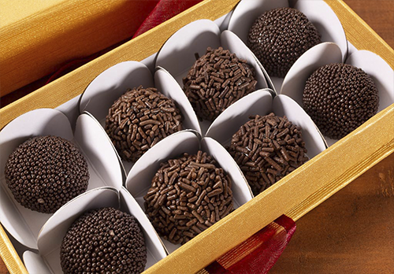

Brigadeiro

Description
Brigadeiro is a delicous Brazillian dessert that's similar to bonbons (but better). It's one of the most loved things in
Brazil, matter of fact almost every party has it.
Ingredients
- 1 (14 ounce) Can sweetened condensed milk
- 3 Tablespoons unsweetened cocoa
- 1 Tablespoon butter
Steps
- Combine condensed milk, cocoa, and butter in a medium saucepan over medium heat. Cook and stir until
thickened, about 10 minutes. Remove from heat and let rest until mixture is cool enough to handle.
- Use your hands to shape into small balls and place on a serving plate. Can be eaten at once or chilled until
serving.
Home Page